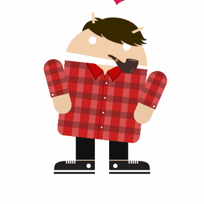

About Me
By: Nelson
Grades: Preferred not to say
Biography:
My name is Nelson and I was given birth in the Fountain Valley Hospital
As a 4 year old child I loved playing games and was intrested on how it worked.
I've always as a little kid wanted to be mostly a gamer and forget everything about school.
As I grew up, I learned that gaming could potentially destory your brain.
Both of my parents worked hard to get what I want and I am just a spoiled kid.
Life is pretty valuable and fun if you do
just be part of it and live it!
Goals and Aspirations:
There are many goals that I want to accomplish before my death but it's possible to
try and accomplish most of this that I'd be satisfied. My number one goal in life
(not emotionally) is to have a happy and fun family that I can spend my time with.
My other goals can be like being a pro gamer or a computer engineer and maybe a doctor
but it all takes time and commitment to become any one of them.What I want to accomplish before
I leave high school is to be proficient or advanced in almost all terms in computer like software
development,or website developer or making apps or even building more computers and one day have
my own company like Microsoft. What I can see myself when I turn 25 is studying and majoring in
the field of Computer Sciences and math-matics and maybe a girlfriend or wife. What I see myself when
I turn 40 is a happy family with a company like Microsoft where I can make my kids happy and live free.
In conclusion, I would like to live a happy life with loved ones around to make each other happy and a job
or company that can provide enough money for my family to enjoy their years in life and for their future!
| Schedule | |
|---|---|
| Period 1 | Spanish 2 |
| Period 2 | Geometry |
| Period 3 | Ap Computer Science |
| Period 4 | English |
| Period 5 | World History |
| Period 6 | Chemistry |
Hobbies
- Gaming on anything!
- Playing Fortnite
- Watching YouTube
- Sleeping
Favorite music
- Roses by: The Chainsmokers
- Xanarchy by: Lil Xan
- I Like Me Better by: Lauv
- Dark Queen by: Lil Uzi Vert
- Never Forget You by: Zara Larsson